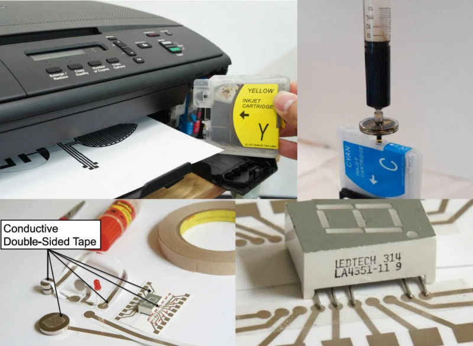

6.810 Engineering Interactive Technologies (fall 2020)
Drawing for Conductive Inkjet Printing
 
Part 1: Creating your Design for Silver Inkjet Printing
In the package you will receive next week, we are going to provide you with the coffee mug shown below, so you can always sip on your favorite drink while attending 6.810. As you can see, the mug is completely blank.
In the next labs, we are going to augment this coffee mug with touch buttons, sliders, and other elements to control your favorite music from Spotify.

Your Task
Create a 2D design that contains the circuit you would like to apply to the mug.
The 2D design should contain at least one touch button and one touch slider as described below.
We will then print out your 2D design with the conductive inkjet printer and you will receive it in the mail hopefully by next week.
Specifications for the Design File
Size of the Mug: You can use the 2D template file here that represents the entire outside surface of the mug to get a sense of the size of your design.
Thickness of Wires: Your wires should be at least 1mm thick. Make sure to check this in your drawing program.
Connector Pads for Wires: The end of your wire that connects to the microcontroller, needs a connector pad that is large enough to connect to conductive tape (or silver paste?). The connector pad should be 1cm x 1cm to be on the safe side.
Shape of your Touch Buttons/Sliders: The shape of these is up to you, be creative and make a unique design.
What Input Elements can you use?
Touch Buttons
Touch-buttons consist of one shape + one wire that connects to the microcontroller.


Touch Sliders (aka multiple touch buttons linearly arranged)
Touch-sliders consist of multiple touch buttons linearly arranged, i.e. several shapes and each shape has its own wire that connects to the micro-controller.
Discrete vs. Continous Sliders:
In the discrete slider design, the finger tends to be only over one of the slider segments.
In the continous design, the finger tends to touch two adjacent slider segements.

From the paper DuoSkin (ISWC 2016)
Continous Sliders (Different Aesthetic Design Options):
From the paper DuoSkin (ISWC 2016)


Dials (aka multiple touch buttons circularly arranged)
Touch-sliders consist of multiple touch buttons circularly arranged, i.e. several shapes and each shape has its own wire that connects to the micro-controller.

Example from the paper DuoSkin (ISWC 2016)
Multi-Touch Pad (multiple touch buttons in a Grid)
The multi-touch pad is more difficult.


(left) Example from the paper Multitouch-Skin (CHI 2018)
(right) Example from the paper DuoSkin (ISWC 2016)